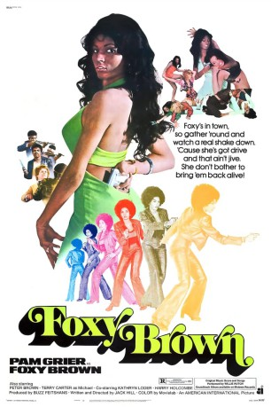

#11105 Foxy Brown
 
 IMDB-Wertung: 6.5 / 10
IMDB-Wertung: 6.5 / 10  Tomatometer: 60
Tomatometer: 60  Metascore: 0
Metascore: 0 
Foxy Brown liebt einen Undercover-Drogenfahnder. Als er ermordet wird, schwört sie seinen Mördern Rache. Als Callgirl verschafft sie sich Zugang zum inneren Kreis der Drogenbosse. Doch Foxy muss erkennen, dass die Korruption weiter nach oben reicht, als sie denkt. Ihre gnadenlose Jagd führt sie von einem abgelegenen Drogenlabor in ein Flugzeug und damit zu einem atemberaubenden Kampf über den Wolken...
Jahr: 1974
Dauer: 91 Minuten
FSK: 18
Land: USA Studio: AIPTonspuren: DD2.0 - ,
Untertitel:
Auflösung: 1080p (1916x1040) Größe: 3338 MB
Genre: Action, Thriller, Krimi
Regisseur: Jack Hill
Drehbuch: Jack Hill
Soundtrack: Willie Hutch
Darsteller:
 Pam Grier als Foxy Brown
Pam Grier als Foxy Brown Antonio Fargas als Link Brown
Antonio Fargas als Link Brown- Peter Brown als Steve Elias
- Terry Carter als Michael Anderson
- Kathryn Loder als Katherine Wall
 Harry Holcombe als Judge Fenton
Harry Holcombe als Judge Fenton Sid Haig als Hays
Sid Haig als Hays- Juanita Brown als Claudia
 Bob Minor als Oscar
Bob Minor als Oscar- Tony Giorgio als Eddie
 Fred Lerner als Bunyon
Fred Lerner als Bunyon- H.B. Haggerty als Brandi
 Jon Cedar als Dr. Chase
Jon Cedar als Dr. Chase- Jeannie Epper als Bobbie
 Conrad Bachmann als Roy
Conrad Bachmann als Roy- Russ Grieve als George
- Rodney Grier als Dawes
 Roydon Clark als Sly
Roydon Clark als Sly- Colleen Brennan als Hooker (uncredited)
 Tommy Chong als Pilot (uncredited)
Tommy Chong als Pilot (uncredited)- Sally Ann Stroud als Deb
- Judith Cassmore als Vicki
- Boyd 'Red' Morgan als Slauson
- Jack Bernardi als Tedesco
- Robert Nadder als Chemist
- Brenda Venus als Jennifer
- Kimberly Hyde als Arabella
- Ed Knight als Adams
- Esther Sutherland als Nurse Crockett
- Mary Foran als Bartender
- Stephanie Epper als Jackie
- Peaches Jones als Barbara
- Helen Boll als Large Lady
- Don Gazzaniga als O'Brien
- Jay Fletcher als Taco Cook
- Gary Wright als 1st Cop
- Fred Murphy als 2nd Cop
- Edward Cross als Willard
- Larry Kinley Jr. als Jason
Datei: X:\FSK18-1900-1999\Foxy Brown (1974, FSK18, 1916x1040).mkv seit 24.04.2019
Festplatte: FSK18
 Es gibt insgesamt 108 Filme in der Gruppe 'FSK18-1900-1999'
Es gibt insgesamt 108 Filme in der Gruppe 'FSK18-1900-1999'